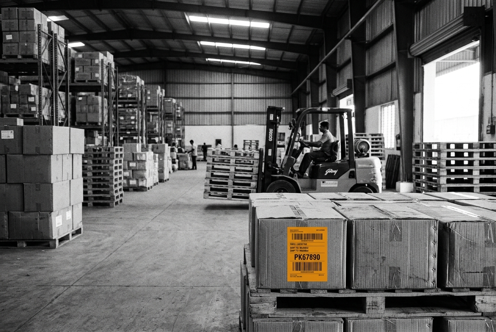
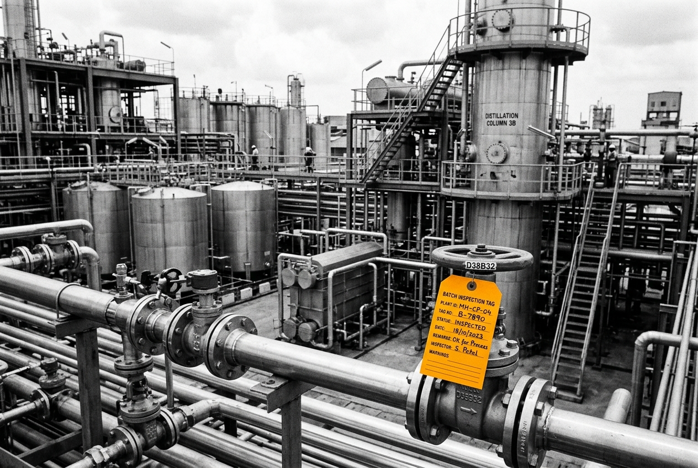

EXECUTIVE BRIEFING
SLIDE 01 / 17
ANTROMAT PRESENTS
Remember everything.
Understand anything.
Miss nothing.
The AI Chief of Staff for Indian Businesses.
Confidential · Investor Presentation
Antromat Enterprise Systems · 2026
THE PROBLEM
SLIDE 02 / 17
Businesses don't have a data problem.
They have a memory problem.
Every day an Indian business generates hundreds of customer conversations, quotations, invoices, production updates and payment reminders. Most of them disappear.
THE FORMAL LAYER
Software Records Transactions
- CRM logs closed deals manually
- ERP captures inventory after the fact
- Accounting software registers historical invoices
- Spreadsheets capture outdated static numbers
THE GROUND REALITY
Operations Happen in Conversation
- WhatsApp chats & voice notes: Order alterations, price agreements
- Quick phone calls: Urgent dispatch approvals, production hold-ups
- Informal estimates: Loose PDFs and handwritten challans
- Fragmented follow-ups: Delayed payments and credit terms
The Founder Bottleneck: The owner remembers everything. When the owner steps away, operations slow down. Context disappears. Mistakes compound.
The Problem · Memory Architecture
Antromat · Slide 02
TIMING & TECHNOLOGICAL SHIFT
SLIDE 03 / 17
Why Now? Three shifts make Business Memory possible today.
Indian businesses have always run on informal communication. Until now, software could not understand it without forcing painful manual data entry.
01 · CONVERSATIONAL INTELLIGENCE
Language Models Understand Unstructured Communication
Modern LLMs extract structured commitments, pricing logic, and timelines directly from messy, informal Hinglish chats without strict templates.
02 · MULTIMODAL PERCEPTION
Multimodal AI Reads the Factory Floor
Computer vision and document models can read scanned tax invoices, handwritten lorry receipts, delivery challans, and machinery meter photos in milliseconds.
03 · REGIONAL AUDIO PIPELINES
Audio Intelligence for Dialects & Voice Notes
Field operators prefer speaking over typing. Advanced speech-to-text reliably transcribes voice notes in Hindi, Marathi, and mixed Indian business dialects.
The Inflection Point: For the first time, software understands the way Indian businesses actually run, without forcing them to change how they communicate.
Why Now · Multimodal & Audio Intelligence
Antromat · Slide 03
THE SOLUTION
SLIDE 04 / 17
The Solution: Business Memory
Antromat sits quietly behind your operations — turning everyday conversations, invoices, and updates into connected business intelligence.
INPUTS
Raw Activity
- 💬 WhatsApp messages & threads
- 🎙️ 15-second audio voice notes
- ✉️ Vendor & customer emails
- 📄 Invoices, challans & PDFs
- 📞 Recorded customer phone calls
CENTRAL ENGINE
Business Memory
- 🧠 Understands conversations automatically
- 🔗 Links context across sales, floor & finance
- ⏱️ Tracks customer commitments & deadlines
- 📚 Maintains living historical institutional memory
OUTPUTS
Executive Action
- 🌅 Daily 08:00 AM Morning Briefing
- 🔍 Instant Search: Ask Antromat Anything
- ⚡ Automated follow-up drafts
- 🚨 Proactive operational bottleneck alerts
Antromat doesn't replace how teams work. It turns daily operational chaos into structured, searchable business memory.
Architecture · Inputs, Memory & Outputs
Antromat · Slide 04
PRODUCT FEATURE
SLIDE 05 / 17
The Product: The 08:00 AM Morning Briefing
Every morning starts with one page. Instead of checking 5 apps and making 20 phone calls, the business owner sees everything that matters before the day begins.
01
Urgent Priorities for Today
Top 3 executive decisions needing sign-off or action before 11:00 AM.
02
Customer Follow-Ups Due
Quotes delivered 48 hours ago without replies; draft WhatsApp message ready to send.
03
Overdue Invoices & Payment Risks
Specific ledger aging flagged with exact promises made by the client's accountant.
04
Factory & Dispatch Bottlenecks
Loom speed variances, raw material hold-ups, and vehicle arrival confirmations.
Product · Morning Briefing Engine
Antromat · Slide 05
PRODUCT FEATURE
SLIDE 06 / 17
The Product: Ask Antromat Anything
Search your business like Google. Ask questions in natural English, Hindi, or Hinglish — answered exclusively from your company's actual records.
Which customers haven't ordered in 30 days?
Found 4 accounts: Apex Texfab (last order 34 days ago, ₹4.8L avg), Sharma Garments (38 days), Royal Mills (41 days). Draft re-engagement notes prepared.
Did Rajesh confirm the fabric price yesterday?
Yes. WhatsApp voice note at 4:18 PM confirmed ₹245/meter for 3,000 meters grey fabric. Delivery promised next Tuesday.
What invoices are overdue past 45 days?
2 invoices totaling ₹5,84,000. Metro Distributors (Inv #1089, ₹3.4L, 52 days overdue) and Kothari Traders (Inv #1102, ₹2.44L, 48 days).
What's holding up batch #402 delivery?
Dyeing supervisor sent a note at 11:20 AM: chemical shipment delayed by 18 hours. Batch delayed until tomorrow 3:00 PM.
Zero Hallucination: Grounded 100% in company transcripts, invoices, and logs with clickable source citations.
Product · Natural Language Business Search
Antromat · Slide 06
SYSTEM ARCHITECTURE
SLIDE 07 / 17
How It Works: The 4 Layers of Business Memory
A continuous, deterministic processing pipeline transforming ambient enterprise chaos into clean intelligence.
LAYER 01
Capture
Ingests unstructured communication from WhatsApp, voice notes, emails, scanned invoices, and field notes with zero manual data entry.
LAYER 02
Structure
Understands conversations, extracts prices, quantities, delivery commitments, payment terms, and client intent automatically.
LAYER 03
Connect
Links conversations to customers, production runs, invoices, and payments — building a continuous relational context graph.
LAYER 04
Assist
Produces the morning briefing, answers operational queries, surfaces overdue invoices, and drafts proactive customer follow-ups.
Each layer operates autonomously in the background. The user simply talks on WhatsApp or checks their morning screen.
Architecture · The 4-Layer Processing Pipeline
Antromat · Slide 07
MODULAR WORKFLOWS
SLIDE 08 / 17
Workflows Built on Business Memory
Antromat begins where operations create the most daily friction, connecting three core operational pillars.
COMMERCIAL
Sales Workflow
- Customer conversation timeline
- Quotation delivery & status tracker
- Deal follow-up notifications
- Dormant account reactivation alerts
MANUFACTURING
Operations
- Daily factory floor voice log
- Batch production stage monitoring
- Dispatch and transport updates
- Supplier delivery delay alerts
LIQUIDITY
Finance
- Overdue invoice aging ledger
- Recorded payment commitments
- Polite WhatsApp reminder drafts
- Tally & Busy reconciliation
FOUNDATION
Business Memory
- The single source of truth
- Links sales, floor & finance
- Searchable historical knowledge
- No silos between departments
Workflows · Sales, Operations & Finance
Antromat · Slide 08
TARGET MARKET
SLIDE 09 / 17
Initial ICP: Indian SME Manufacturing
Focusing on businesses where operations are high-velocity, communications are messy, and the owner is the operational bottleneck.

Textile Mills & Weaving

Garment Units & Apparel

Warehouses & Logistics

Chemicals & Regional Distr.
Profile Characteristics
- Revenue Scale: ₹5 Crore to ₹50 Crore annual turnover.
- Leadership: Founder/owner manages day-to-day coordination.
- Daily Volume: 200+ WhatsApp messages & audio notes daily.
- High Friction: Frequent coordination gaps between sales and dispatch.
- Delayed Collections: Payment follow-ups slipping through cracks.
High Pain, Immediate ROI: Saving just one missed order or recovering one overdue invoice pays for Antromat for an entire year.
ICP · Indian Manufacturing SMEs
Antromat · Slide 09
MARKET EXPANSION
SLIDE 10 / 17
Millions of Indian businesses still run on conversations.
India has over 63 million MSMEs across manufacturing, textiles, logistics, chemicals, and distribution.
THE UNTAPPED REALITY
Operations Happen in Unstructured Channels
A significant share of daily operational activity still happens through messaging apps, spreadsheets, PDFs, and phone calls.
THE SOFTWARE GAP
Software Records Data. None Stores Context.
Existing accounting tools record transactions after they occur. Very little software understands live operational context as it happens.
THE EXPANSION THESIS
Horizontal Infrastructure from Vertical Wedge
Antromat begins with manufacturing workflows in Maharashtra and expands into wholesale, distribution, and corporate operations nationwide.
Long-term Vision: Business Memory becomes essential horizontal infrastructure for every SME in emerging markets.
Market Opportunity · Horizontal Expansion
Antromat · Slide 10
DIFFERENTIATION
SLIDE 11 / 17
Traditional software stores data.
Antromat stores context.
We don't replace communication. We make communication searchable, connected, and actionable.
| DIMENSION |
TRADITIONAL CRM / ERP |
ANTROMAT BUSINESS MEMORY |
| Data Entry |
Manual form filling; employees resist updating. |
Understands conversations automatically from WhatsApp & audio. |
| Customer History |
Separate, static customer contact cards. |
Continuous customer memory across all chats, orders, and calls. |
| Operations Sync |
Siloed tools requiring separate logins and sync. |
Connected timeline linking sales, floor production, and billing. |
| Information Retrieval |
Search by rigid database fields and IDs. |
Ask natural questions in plain English, Hindi, or Marathi. |
| Daily Executive Utility |
Spam notifications and cluttered dashboards. |
One clean AI-generated priority briefing every morning at 08:00 AM. |
Competitive Advantage · Context vs Data
Antromat · Slide 11
BUSINESS MODEL
SLIDE 12 / 17
SaaS for Operational Intelligence
Recurring subscription model designed to expand as businesses connect more workflows, facilities, and operators.
TIER 01
Starter
For businesses beginning to organize operations. Centralized conversation capture, customer timeline, and 08:00 AM daily executive briefing.
Focus: Single-unit operations & trading hubs
TIER 02 · CORE
Growth
The complete AI Chief of Staff. Sales + Operations + Finance workflows unified together under one living Business Memory with Tally sync.
Core ICP: Manufacturing SMEs (₹5Cr–₹50Cr)
TIER 03
Enterprise
Custom industry templates, dedicated on-premise / private cloud hosting, multi-plant deployments, bespoke ERP connectors, and SLA support.
Target: Multi-plant mills & distribution networks
Commercial Calibration: Subscription price points are currently being finalized with industry advisors and design partners. Expansion levers include additional plants/seats, vertical templates, and AI usage tiers.
Business Model · SaaS Recurring Subscriptions
Antromat · Slide 12
GO TO MARKET
SLIDE 13 / 17
Go To Market: Founder-led before sales-led
The first goal is not rapid vanity scale. The first goal is proving deep Business Memory utility inside real manufacturing businesses.
PHASE 01 · VALIDATION
Maharashtra Pilots
Direct founder-led pilot deployments with 10–15 manufacturing businesses in Vidarbha, Nagpur, and Pune industrial zones.
PHASE 02 · CLUSTERS
Textile & Garment Hubs
Expand into concentrated industrial clusters: Ichalkaranji, Bhiwandi, Surat, and Tirupur via industry associations and trade partners.
PHASE 03 · EXPANSION
Referrals & Partnerships
Word-of-mouth referrals between factory owners, chartered accountants, and ERP channel consultants recommending Antromat.
Channels: Factory visits & on-ground audits, LinkedIn executive outreach, incubator networks, and design partner co-creation.
GTM Strategy · Founder-Led Cluster Expansion
Antromat · Slide 13
EXECUTION ROADMAP
SLIDE 14 / 17
Building Business Memory layer by layer
A disciplined, progressive rollout delivering compounding customer value at every stage.
STAGE 01
Memory MVP
WhatsApp & voice note ingest + Morning Briefing digest generation.
STAGE 02
Sales Timeline
Quote tracking, client commitments, and re-engagement triggers.
STAGE 03
Operations
Factory floor tracker, dispatch alerts, and supplier hold-up logs.
STAGE 04
Finance Intel
Tally/Busy integration, payment aging, and automated follow-ups.
STAGE 05
Enterprise
Multi-plant orchestration, ERP connectors, and air-gapped security.
Ultimate North Star: Every business founder opens Antromat before opening WhatsApp or email.
Roadmap · 5 Phased Execution Stages
Antromat · Slide 14
FOUNDER BACKGROUND
SLIDE 15 / 17
Why Me: Building from customer conversations first
Antromat is not built in an ivory tower. It is shaped directly on the ground by how Indian businesses operate.
Soham Gaul
3RD-YEAR B.TECH · ARTIFICIAL INTELLIGENCE & DATA SCIENCE · WARDHA
Before starting Antromat, I built and validated a LegalTech product by speaking directly with practicing lawyers in Wardha and the Nagpur High Court.
When customer discovery revealed the market was unwilling to pay, I shut that idea down instead of forcing it. That experience fundamentally changed how I build.
Antromat started by talking to factory owners and business operators first — observing how they communicate on WhatsApp, how orders get lost, and where operational knowledge leaks. I am building alongside customer reality, not assumptions.
Founder Profile · Grounded Customer Discovery
Antromat · Slide 15
CAPITAL ALLOCATION
SLIDE 16 / 17
The Ask: Raising ₹20,00,000
Pre-seed capital to deploy Business Memory into production pilots, validate retention, and establish a repeatable founder-led sales motion.
| ALLOCATION |
PURPOSE |
SHARE |
| AI Infrastructure |
Claude, OpenAI, Gemini API costs & regional speech inference pipelines. |
25% (₹5,00,000) |
| Product Development |
Engineering workstations, vector database hosting, and development tooling. |
20% (₹4,00,000) |
| Customer Discovery |
Travel to Maharashtra manufacturing clusters (Bhiwandi, Pune, Ichalkaranji) for pilots. |
20% (₹4,00,000) |
| Go-To-Market |
Demos, pilot onboarding collateral, and initial customer acquisition. |
15% (₹3,00,000) |
| Hiring Support |
First junior engineering & UI/UX design support to accelerate delivery. |
10% (₹2,00,000) |
| Legal & Compliance |
Private limited company incorporation, CA retainers, IP filings, agreements. |
10% (₹2,00,000) |
MILESTONES UNLOCKED BY THIS ROUND
Business Memory MVP deployed
First 10–15 paying pilots onboarded
Real factory workflows running daily
Repeatable sales motion established
Investment Ask · Pre-Seed Round
Antromat · Slide 16
SUMMARY & CLOSING
SLIDE 17 / 17
THE MEMORY LAYER FOR BUSINESS
Every business generates knowledge.
Antromat remembers it.
We are building the AI Chief of Staff that keeps Indian businesses organized, accountable, and moving forward with quiet confidence.
Antromat Enterprise Systems · All Rights Reserved
Slide 17 / 17 · The AI Chief of Staff